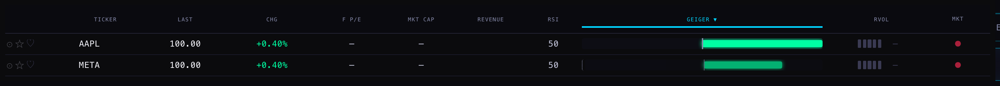
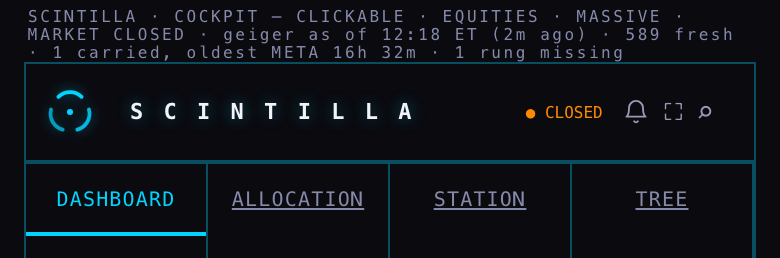

G1 — THE GEIGER NEVER FREEZES AGAIN
Alan, 3 October: “I prefer to have it a little bit wrong than to have it a little bit old.” This is that rule, built into the Geiger’s back end, with the proof. Nothing here is live yet: the back end waits for the coordinator’s deploy after review, and the small Hub change at the bottom waits for you.
What happened (the reason for this work)
On 30 September, 1 October and 2 October, from midnight until about half past four in the afternoon, the Hub showed the previous evening’s Geiger for every name — up to 16½ hours old — and said nothing about its age. The cause was one rule: the publisher refused to publish anything unless every one of the 590 names computed every one of its 7 timeframes. On those days 56 names could not get a fresh daily bar (a storage guard of ours refused the refresh), so the whole board held. Q2a reconstructed this from 4,739 stored “refused cycle” records; earlier whole days in September froze the same way for other single causes.
What can no longer freeze the Geiger
| Before | Now |
|---|---|
| One name failing held all 590. | The other 589 publish. The failing name keeps its last good value, marked with how old it is and why (“carried”). |
| One missing timeframe failed the whole name. | The name is computed from the timeframes it has (the Equalizer weights are re-balanced over them) and the missing one is named. |
| A refused daily bar was retried 9 times per name per cycle; cycles stretched from 4 to 12 minutes. | A refusal we caused ourselves is not retried at all; a passing network hiccup gets one more try, inside a 200-second budget. |
| If the chart service was down, or the Equalizer could not be read, the publisher simply quit — frozen board, no age. | The previous reading is re-published with every name marked “carried”, so the Hub can show the age. |
| The chart service answered “no chart” (an error) when a daily refresh was refused — for 56 names, 16 hours a day. | It serves the bars it holds, marked stale with the date they are from and the named cause. |
| At start-up, if the list of names did not match the pinned count exactly, the publisher refused to start. | It starts on the list it has and writes the mismatch as a mark on the data. |
| The age of what you were looking at was not in the data. | Every name carries its own clock and a “fresh / carried” block; the whole reading carries a freshness summary (how many fresh, how many carried, the oldest). |
Twelve places in the code could hold the whole board. All twelve are listed by file and line in the coordinator’s runbook (runbooks/G1_GEIGER_LIVENESS_20261003.md on the provider branch).
The proof (a throw-away machine, today’s real data, nothing written)
| Run | What was forced | Result |
|---|---|---|
| 1 | nothing | 590 of 590 names, all 4,720 timeframe cells, verified — 56 seconds, exactly one request per cell |
| 2 | META’s every input fails; AAPL loses its daily timeframe | 590 names published: 589 fresh + META carried (its previous value, 2 min 22 s old, cause named); AAPL fresh from its other timeframes, the daily one named as missing |
| 3 | the Equalizer cannot be read | the previous reading re-published with all 590 marked carried; the “computed” clock honestly kept, the “published” clock moved |
The Hub’s own safety check of the artifact (the one that blanks every score if the accounting does not add up) still passes on every one of these. Provider tests: 844 before, 855 after, all green. The throw-away machine was stopped and destroyed; the two live machines were never touched.
The Hub age display (a separate, small change — waits for you)
One line on the stamp bar at the very top, in the same quiet grey, and a faint mark on a carried row. It changes no number. The back end does not need it.


Also on the Hub branch: the board’s sort by Geiger no longer waits for every cell of every name to be complete (that was another way one name could degrade the board); the Equalizer receipt, the universe digest and a consistent accounting still gate it.
What could be wrong
- A carried name shows a value from an earlier cycle. It is marked and aged; if a name stays carried for many cycles, the line says so (“oldest META 16h …”).
- A name computed from six timeframes instead of seven leans a little more on the ones it has. The missing one is named on the data.
- A daily bar served “stale” may be yesterday’s. It is marked, and the next request tries the refresh again.
What was not done
- Nothing deployed; no live machine touched; nothing written to storage (the proof ran dry).
- The proof machine used the Equalizer snapshot in the image (8 timeframes) because the live publisher’s Equalizer setting is a machine secret the proof did not copy; the live run keeps the live Equalizer (7). The mechanics do not depend on it.
- The Hub age line is on a branch, not live. Hub tests: the same 6 failures as the clean base, 0 new.
PAGE SPECS
Provider branch provider/g1-geiger-liveness-20261003 (from Q2a @ae2b466). Hub branch hub/g1-geiger-age-20261003 (from release-20260923 @9d2b1ca). Pictures: headless Chromium, the real page served from the worktree with every outside request blocked (448 blocked), the artifact state fed to the page’s own functions (SC_CG.meta, scPaintGeigerAge, boardRowsHTML). Wire additions on /geiger: freshness, published_utc, per-name computed_utc and liveness; on /candles: stale, stale_cause, daily_refresh.state = STALE_SERVED. Public practice followed: Prometheus staleness markers and Grafana “last value with age” panels (a late series is shown late, not removed); Kubernetes liveness-vs-readiness (a late component is reported, not killed).